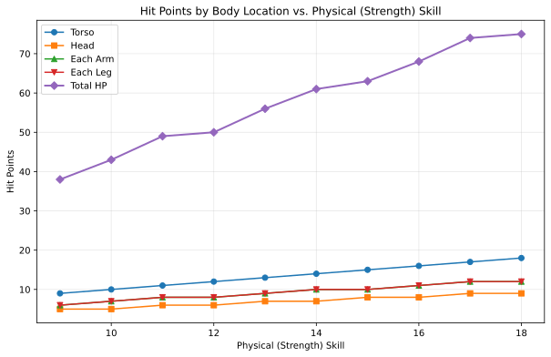

Combat
Combat situations arise naturally in many genres and settings. OpenAxiom recognizes that violence is sometimes necessary in fiction, and that in fact it is often a key aspect of why people enjoy TTRPGs, and so provides mechanics that make these scenes engaging and meaningful, providing enough simulationist crunch to add consistent and serious consequences and interesting tactical choices.
At the same time, OpenAxiom recognizes that combat may not be the goal of some tables. As a result, the combat system is designed to be optional, not strictly necessary to character progression or development. Game Masters may choose to avoid the combat rules entirely if they wish! These are designed for tables that like combat. If your table wants to focus on narrative, it can simply focus on the core character mechanics and logic of action rules, using Contested Actions or Contested Extended Actions to simulate combat when needed. This is why the health and body locations system is specified here, and not in the character mechanics section.
When characters enter combat, the game shifts to the Tactical Time round structure as defined in the core game loop. This shift to Tactical Time is mandatory during combat encounters, ensuring that all actions occur in a consistent and fair sequence. During Tactical Time, each character takes turns performing actions, with initiative determined by relevant skills and traits. This system allows for detailed resolution of combat actions while maintaining the pace and excitement of violent confrontation.
The Attack Sequence
When characters enter combat, the game shifts to the Tactical Time round structure as defined in the core game loop. The full sequence of play during a round in combat is defined there, including how initiative is determined and how players take turns performing actions. This section describes only the sequence of steps required to perform the "Attack" Major Action under Tactical Time. Remember that attacking is just one of many possible Major Actions you can take during your turn in combat.
All weapons have a required skill level that must be met or exceeded to use them effectively. The action point cost to make an attack with a weapon is the standard 6 AP for a Major Action plus the additional cost based on skill difference. This additional cost is determined by subtracting the character's skill level from the weapon's required skill level, with a minimum additional cost of 0 AP. For example, if a character has a Combat (Melee) (Sword) skill of 12 and the sword requires a skill level of 10, the attack would cost 6 AP (6 + 10 - 12 = 6 + -2, minimum 0 = 6). If the character's skill is significantly lower than the weapon's requirement, the attack costs more AP. For instance, if the character has a skill of 8 and the weapon requires 10, the attack would cost 8 AP (6 + 10 - 8 = 8).
The sequence of steps required to do the "Attack" Major Action under Tactical Time follows this sequence:
-
Declare: The attacker declares their attack, specifying their target, the location they are aiming for, and the weapon they are using.
-
Calculate Cost: The action point cost of the attack is calculated (6 AP base + weapon's required skill - character's skill, minimum 0 additional cost).
-
Roll: The attacker makes their Combat skill check. The defender makes a relevant defense check (e.g., Physical (Dodge)).
-
Determine: The outcome is determined by comparing the Degrees of Success. The attack hits if the attacker achieves a higher degree of success.
-
Damage: On a hit, the attacker rolls their weapon's damage.
-
Armor: The target subtracts the Damage Resistance (DR) value of the armor covering the specific location hit from the total damage.
-
Apply: The final damage is subtracted from the HP of the location that was hit.
Beyond Attacks: Other Combat Actions
While the attack sequence focuses on making attacks, combat encounters often involve much more than just hitting opponents. Players can use their Major Actions during combat to perform a wide variety of activities that make sense in the situation.
Examples of other combat actions include:
- Shoving an opponent to push them backward or knock them prone
- Hiding behind cover or ducking behind an obstacle
- Attempting to disarm an opponent's weapon
- Climbing onto a ledge or structure for tactical advantage
- Binding a wound during a lull in the fighting
- Shouting commands to allies or intimidating enemies
- Searching a fallen opponent for items
- Activating a special ability or item
When a player wants to perform an action that isn't covered by the standard attack sequence, they simply describe what they want to do and ask the Game Master. The Game Master will determine what type of skill check is appropriate based on the situation:
- Simple Action: For straightforward tasks that don't require opposition
- Contested Action: For actions that directly oppose another character's efforts
- Extended Action: For tasks that require time and sustained effort
- Contested Extended Action: For ongoing struggles between characters
This approach provides much less to remember than traditional move lists while maintaining the simulational crunch players enjoy. It also allows for greater creativity and flexibility in combat situations, as players aren't limited to a predefined set of actions.
The Injury System
The injury system determines what actually happens when a character takes damage. It represents different body parts separately, with different mechanical effects as a result of attacking them, to provide more interesting mechanical choices.
Health & Body Locations
Characters have six body locations, each with its own pool of Hit Points (HP). HP is calculated from the character's Physical (Strength), Physical (Endurance), Constitution, or other skill values, whichever is highest. The difficulty modifier applies to the attacker's combat skill value when targeting that specific location.
| Body Location | Hit Points Calculation | Example (Strength 9) | Difficulty Modifier |
|---|---|---|---|
| Torso | Full Physical (Strength) value | 9 HP | +0 |
| Head | 1/2 Physical (Strength) (round up) | 5 HP | -3 |
| Each Arm | 2/3 Physical (Strength) (round up) | 6 HP | -2 |
| Each Leg | 2/3 Physical (Strength) (round up) | 6 HP | -2 |
The following table provides a quick reference for the HP values of each body location for characters with Physical (Strength) skills ranging from 9 to 18. This is purely for convenience; the actual rule is still the calculation in the body part table above.
| Physical (Strength) | Torso | Head | Each Arm | Each Leg | Total HP |
|---|---|---|---|---|---|
| 9 | 9 | 5 | 6 | 6 | 38 |
| 10 | 10 | 5 | 7 | 7 | 43 |
| 11 | 11 | 6 | 8 | 8 | 49 |
| 12 | 12 | 6 | 8 | 8 | 50 |
| 13 | 13 | 7 | 9 | 9 | 56 |
| 14 | 14 | 7 | 10 | 10 | 61 |
| 15 | 15 | 8 | 10 | 10 | 63 |
| 16 | 16 | 8 | 11 | 11 | 68 |
| 17 | 17 | 9 | 12 | 12 | 74 |
| 18 | 18 | 9 | 12 | 12 | 75 |
The following graph visualizes how a character's total HP and HP per body part increase as their Physical (Strength) skill improves:

Consequences of Injury
Damage to local HP pools does not immediately do anything. However, over time, as injuries to various parts of the body add up, global effects begin to take place.
Crippling Injury
When a location's HP is reduced to *0 or below*, it is Crippled. This has the following effects:
| Body Location | Effect on Character |
|---|---|
| General | When a location is first Crippled, the character's Physical Harm Tracker immediately increases by one level. |
| Head | In addition to the Physical Harm, the character's Mental Harm Tracker also increases by one level. The character must make an immediate Physical (Endurance) check or fall unconscious. |
| Arm (First Crippled) | The character loses access to half of their total inventory slots, rounded up. The player must immediately choose which items to drop. |
| Arm (Second Crippled) | The character's available inventory slots are reduced to 0 |
| Leg (First Crippled) | The character's movement speed is halved. |
| Leg (Second Crippled) | The character's movement speed is reduced to a minimum of 1. |
A limb may go into the negative HP levels as well. This does not make the crippling worse, but it can have other consequences, as described in the Systemic Shock section.
Critical Success on Attack
When an attacker scores a Critical Success, they deal damage as normal. In addition, the target's Physical Harm Tracker immediately increases by one level. This is independent of and can stack with Harm gained from a Crippling Injury on the same attack.
Systemic Shock
Systemic shock occurs whenever a character's total HP pool is decreased by another half of their total original HP pool. The character's Physical Harm Tracker increases by one level for every half of their total original HP pool that they lose.
For example, a character with average Physical (Strength) of 9 would have a total of 38 HP across all locations (9 Torso + 5 Head + 6 Left Arm + 6 Right Arm + 6 Left Leg + 6 Right Leg). This character would experience systemic shock and gain one level on their Physical Harm Tracker for every 19 HP they lose from their original total:
- At 38-20 HP remaining (0-18 HP lost): No systemic shock
- At 19-1 HP remaining (19-37 HP lost): First systemic shock (+1 to Physical Harm Tracker)
- At 0 HP remaining (38+ HP lost): Second systemic shock (+2 to Physical Harm Tracker)
Defeat and Death
A character is taken out of a fight under the following conditions:
-
Incapacitated: Their Physical Harm Tracker reaches Level 4.
-
Unconscious: Their Head or Torso is Crippled, and they fail the subsequent Physical (Endurance) check.
-
Killed: Their Head or Torso HP is reduced to a negative value equal to its starting maximum (e.g., -5 HP for a 5 HP Head).
In the former two cases, staying alive becomes an extended action their Physical (Strength): if they succeed, they get to continue being only unconscious until the combat scene ends. If they fail, they die.
Non-Harm-Tracker Status Effects
While the harm tracker system covers generalized status effects that affect broad categories of skills, some specific status effects operate outside this system. These non-harm-tracker-based status effects are simpler and more focused in their mechanical impact. There are three primary types:
-
Continuous HP Drain: Effects like bleeding or poison that continuously drain HP from a specific body location. Unlike harm trackers which apply penalties to skill checks, these effects directly reduce the HP pool of the affected limb. For example, a bleeding arm would lose a set amount of HP each round until the bleeding is stopped. Note that all normal effects of HP loss still apply to continuous HP drain, including systemic shock when total HP loss reaches certain thresholds and checks for whether the limb becomes crippled when its HP reaches 0 or below.
-
Movement Speed Detriment: Effects that reduce a character's movement speed, such as being entangled or slowed. These effects set a specific detriment to the character's normal movement allowance, reducing how many hexes they can move on their turn.
-
Weapon Range Detriment: Effects that reduce the effective range of a character's weapons, such as poor visibility or unstable footing. These effects set a specific detriment to the weapon's normal range, reducing the distance at which the weapon remains effective.
These status effects represent specific, concrete mechanical impacts rather than the generalized skill penalties of harm trackers, providing more precise simulation of certain conditions that affect characters in combat.
Advanced Combat Rules
The following are an optional toolkit of combat rules that GMs can assemble in order to account for various different situations or preferred combat playstyles, or use as references for designing their own optional combat mechanics for their own setting packs.
Spatial Relations

More advanced players who want more interesting tactical opportunities may introduce a hexagonal grid when players enter combat to structure character, NPC, and enemy spatial relations. This optional system adds tactical depth by making positioning and movement important factors in combat. This set of rules is an example of how totally new dimensions of combat can be modularly added to the game and well-integrated with existing systems.
Setting Up the Battlefield
In hex-based tactical combat, the battlefield is divided into hexagonal tiles, with each tile representing a specific type of terrain. Players, NPCs, and enemies are represented by counters or miniatures that are placed on these hex tiles. Each hex tile has a terrain type that affects movement costs and combat, as detailed in the terrain table below.
All players must start wherever the Game Master decides they should start on the grid. The Game Master also places all non-player characters and enemies on the grid according to the tactical situation. Each hex on the map can be one of several terrain types, each with different properties:
| Terrain Type | Movement Cost | Combat Effects | Description |
|---|---|---|---|
| Floor | Normal | None | Standard terrain with no special properties |
| Wall | Impassable | Blocks movement and line of sight | Solid barriers that cannot be moved through |
| Difficult Terrain | +1 to +3 movement | As determined by the Game Master | Environmental features like trees, bushes, water, etc. |
| High Ground | Normal | +1 to +3 bonus to ranged combat skills | Elevated positions that grant tactical advantages |
| Cover | Normal | -1 penalty to ranged attacks through it | Provides partial protection without blocking movement or line of sight |
| Unstable Terrain | Normal | Requires Physical (Acrobatics) check to avoid falling prone | Surfaces that are slippery, loose, or otherwise unstable. The Physical (Acrobatics) check must be made whenever a character moves into a hex of this type. |
| Damaging Terrain | Normal | Causes fixed HP damage to both legs | Surfaces that cause damage. Fixed HP damage is applied to both legs whenever a character moves into a hex of this type. |
Note that posture and cover penalties stack. For example, a character laying down (-2 penalty) behind cover (-1 penalty) would have a total -3 penalty to ranged attacks targeting them.
Specific examples of all types of terrain (both special and not) are determined automatically by the setting and location, but all conceivable types of gameplay-relevant terrain should fall into one of these categories.
Posture System
Characters can adopt different postures during combat to gain defensive advantages at the cost of mobility. The posture system provides tactical options for players who want to trade movement for protection:
| Posture | Movement Restriction | Ranged Combat Defense Bonus | Description |
|---|---|---|---|
| Standing | Normal movement | None | Standard posture with no restrictions or bonuses |
| Crouching | Only one hex per turn | -1 modifier to hit | Lower profile provides minor protection against ranged attacks |
| Laying Down | Cannot move | -2 modifier to hit | Maximum protection against ranged attacks at the cost of mobility |
Characters can change their posture as a minor action on their turn. This allows them to adapt their tactics based on the current situation, such as taking cover when under heavy ranged fire or standing up to move more freely.
Movement
Moving is considered a minor action that costs 3 action points. Players may move up to their best fleetness/quickness related Physical skill minus 5 (minimum of 1) as their movement distance. Since moving is a minor action, players with sufficient action points could potentially move multiple times during their turn, or move and still take a major action. Moving through difficult terrain costs additional movement points as determined by the terrain table above.
Line of Sight
Players who use ranged weapons must have a line of sight to the opponents they wish to attack. Only walls block movement and line of sight. Trees, bushes, and other environmental features count as walls in outdoor settings for the purpose of blocking line of sight. Characters can see and attack through other characters, but must make an extra skill check against their combat skill to succeed.
Range
Any ranged item designed to be used with the spatial relations rules should come with a specified range. Players only need line of sight and a successful skill check to hit something within the range of their ranged weapon. For targets beyond the weapon's range, players get a -1 penalty to their skill check for every hex beyond their range they aim.
Flanking
When attacking an enemy in melee combat, positioning can provide significant tactical advantages. If one or more of a character's allies are adjacent to an enemy that the character is attacking, this is considered flanking.
Flanking provides the following benefits:
- The attacking character receives a +1 bonus to all attack skill checks against the flanked enemy
- The flanked enemy receives a -1 penalty to all of their attack skill checks
Flanking represents the tactical advantage of having multiple attackers positioned around an enemy, making it difficult for the target to defend against attacks from multiple directions simultaneously. This bonus applies to all melee attacks, and the penalty applies to all attacks made by the flanked character until the flanking conditions change (either the allies move away or the target moves).
Zone of Control
Each character exerts control over the area immediately surrounding them. The six hexes adjacent to any character constitute their zone of control. This represents the area that a character can effectively threaten with their presence and weapons.
When an opponent enters a character's zone of control, that opponent is considered engaged with the character. If the opponent attempts to leave the zone of control without first knocking the controlling character unconscious or killing them, the controlling character may make a free attack against the fleeing opponent as they attempt to escape.
This free attack:
- Is made immediately when the opponent attempts to leave the zone of control
- Does not consume the controlling character's major or minor action
- Must be declared before the opponent's movement is resolved
- Uses the controlling character's relevant combat skill
- Is resolved as a normal attack sequence (declare, roll, determine, damage, armor, apply)
This rule represents how difficult it is to simply walk away from an armed opponent without dealing with them first. The zone of control mechanic adds tactical depth to positioning and makes retreats more strategically meaningful.
Vehicles

This advanced combat rule requires the Spatial Relations rules to be in use.
Vehicles add a new layer of tactical complexity to combat encounters. Whether it's a high-speed chase through a futuristic city or a naval battle between warships, vehicles require different handling than regular characters.
Vehicle Statistics
Every vehicle has several key statistics:
-
Size: Determines how many characters a vehicle can hold:
-
Small (S): One character riding on the outside
- Medium (M): One character riding on the inside
- Large (L): Four characters riding on the inside
-
Extra Large (XL): Six characters riding on the inside
-
Acceleration Rate: A constant value measured in hexes, representing how many hexes the vehicle can add to its current speed each turn. This value also determines how many hexes the vehicle can subtract from its current speed each turn when braking. For example, a vehicle with an acceleration rate of 2 can increase or decrease its speed by up to 2 hexes per turn.
-
Maneuverability: A constant rating that determines how many hex sides the vehicle can turn each turn. For example, a vehicle with a maneuverability of 2 can change its facing by up to 2 hex sides per turn.
-
Damage Resistance (DR): A constant value that reduces damage taken by anyone inside the vehicle. Characters riding inside a vehicle apply this DR in addition to any armor they are wearing when determining damage taken from attacks.
Vehicles also have variable values that are tracked during play:
-
Speed: A variable value that changes over time and represents the number of hexes a vehicle moves on its turn, as long as this value is greater than zero. Vehicles must move this many hexes in the direction they are currently facing. Represented using a d100.
-
Facing: The current hex side the vehicle is pointed, which determines the direction of movement. Represented by the direction the vehicle token or mini is pointing in.
Steering and Movement
Vehicles have two primary movement actions that each cost 3 Action Points:
-
Accelerating or Braking: Vehicles can accelerate or brake by up to their acceleration rate in hexes per turn. Acceleration increases the vehicle's speed, while braking decreases it. A vehicle's speed can never be reduced below zero.
-
Turning: Vehicles can change their facing by up to their maneuverability rating in hex sides per turn.
When steering, the vehicle's facing changes first, and then the vehicle moves in that new direction. This means that players can plan their turns by first deciding how much to turn, then moving the appropriate number of hexes in that direction.
Vehicles must move a number of hexes equal to their current speed on each turn, as long as their speed is greater than zero. This movement is mandatory and must be in the direction the vehicle is currently facing. Players cannot choose to move fewer hexes than their current speed.
Using Vehicles in Combat
Characters operating vehicles use the vehicle's movement rules instead of their own. Any characters riding in the vehicle move with it automatically.
Attacks against vehicles directly are not possible in this system. Instead, characters must target those inside the vehicle, and vehicles act as simple pieces of armor for the characters inside the vehicle, but not outside.
Vehicles can be used to ram enemies. This does an amount of damage points determined by the vehicle's size plus its current speed.
XL vehicles can also be used to knock down walls, but this reduces the speed of that vehicle back down to one.